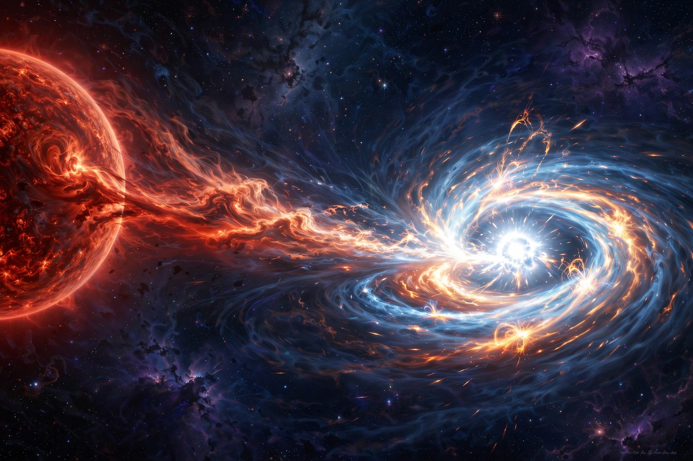

| Type Ia supernova | |
|---|---|
| Progenitor | Carbon–oxygen white dwarf in a binary system |
| Trigger | Approaching the Chandrasekhar limit (~1.44 M☉) |
| Peak luminosity | ~5×109 L☉ |
| Spectrum | No hydrogen; strong silicon absorption |
| Cosmological use | Standardizable candle |

A Type Ia supernova is a type of supernova that occurs in binary systems in which one of the stars is a white dwarf. The other star can be anything from a giant star to an even smaller white dwarf. Type Ia supernovae are distinguished spectroscopically by the absence of hydrogen lines and the presence of a strong silicon absorption feature near maximum light.
In the leading "single-degenerate" model, a carbon–oxygen white dwarf accretes matter from a companion star. As its mass approaches the Chandrasekhar limit of about 1.44 solar masses, compressional heating ignites runaway carbon fusion in the core. Because the degenerate core cannot expand to regulate the burning, the entire star is incinerated in seconds and completely disrupted — no compact remnant remains. A competing "double-degenerate" model involves the merger of two white dwarfs. The explosion synthesises about 0.6 solar masses of radioactive nickel-56, whose decay powers the months-long light curve.
Type Ia supernovae have remarkably uniform peak luminosities because they explode at a near-uniform mass, and the residual variation correlates with the light curve's width (the Phillips relation), making them "standardizable candles". Comparing their apparent and absolute brightness yields distances to their host galaxies. In 1998 two teams used distant Type Ia supernovae to discover that the expansion of the universe is accelerating — evidence for dark energy, recognised by the 2011 Nobel Prize in Physics.
This article was recreated from memory as part of a web-reconstruction exercise.